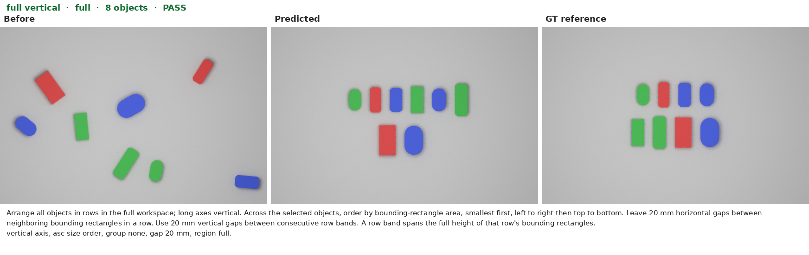
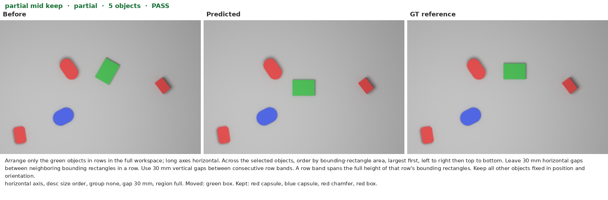
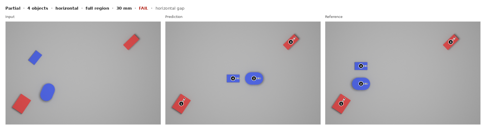
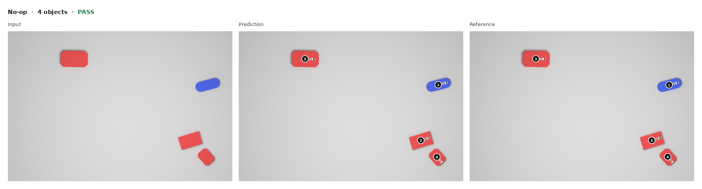
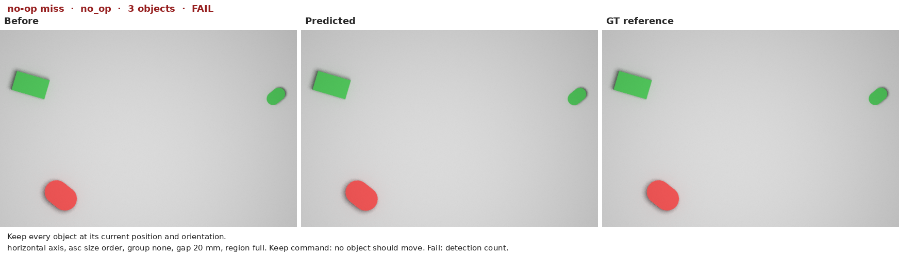
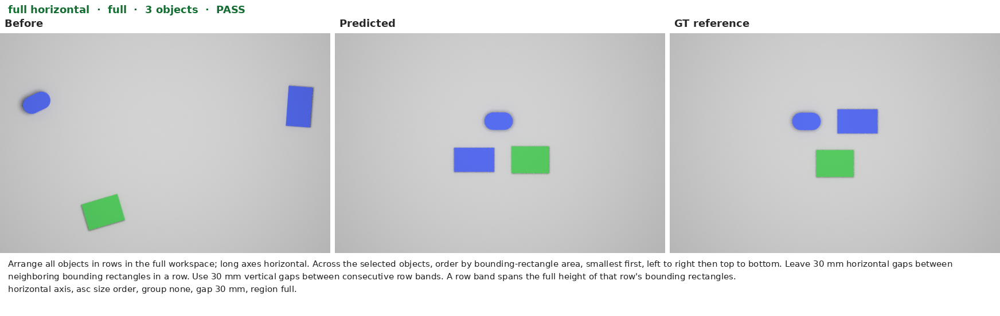

End-to-end knolling, commit 26dca53
These 10 validation scenes were picked to show full, partial, and no-op behavior, including 7 passes and 3 failures. They are not a success rate. Inference used the RGB image and the instruction only. The GT column is a reference render. Harder scenes are listed first. The 3-object example is at the bottom.
Contact sheet · Summary

02 · full · 8 objects · PASS
Arrange all objects in rows in the full workspace; long axes vertical. Across the selected objects, order by bounding-rectangle area, smallest first, left to right then top to bottom. Leave 20 mm horizontal gaps between neighboring bounding rectangles in a row. Use 20 mm vertical gaps between consecutive row bands. A row band spans the full height of that row's bounding rectangles.
official checks passed

07 · partial · 7 objects · PASS
Arrange only the blue objects in rows in the left region; long axes horizontal. Use single-color rows, with each color's rows together. Within each color, order by bounding-rectangle area, smallest first, left to right then top to bottom. Leave 15 mm horizontal gaps between neighboring bounding rectangles in a row. Use vertical gaps of 15 mm between consecutive row bands within a color and 30 mm between colors. A row band spans the full height of that row's bounding rectangles. Keep all other objects fixed in position and orientation.
official checks passed

04 · full · 6 objects · FAIL
Arrange all objects in rows in the full workspace; long axes horizontal. Use single-color rows, with each color's rows together. Within each color, order by bounding-rectangle area, smallest first, left to right then top to bottom. Leave 30 mm horizontal gaps between neighboring bounding rectangles in a row. Use vertical gaps of 30 mm between consecutive row bands within a color and 60 mm between colors. A row band spans the full height of that row's bounding rectangles.
horizontal gap, vertical gap

03 · full · 4 objects · PASS
Arrange all objects in rows in the full workspace; long axes horizontal. Use single-color rows, with each color's rows together. Within each color, order by bounding-rectangle area, smallest first, left to right then top to bottom. Leave 20 mm horizontal gaps between neighboring bounding rectangles in a row. Use vertical gaps of 20 mm between consecutive row bands within a color and 40 mm between colors. A row band spans the full height of that row's bounding rectangles.
official checks passed

05 · partial · 2 objects · PASS
Arrange only the red objects in rows in the full workspace; long axes horizontal. Use single-color rows, with each color's rows together. Within each color, order by bounding-rectangle area, largest first, left to right then top to bottom. Leave 15 mm horizontal gaps between neighboring bounding rectangles in a row. Use vertical gaps of 15 mm between consecutive row bands within a color and 30 mm between colors. A row band spans the full height of that row's bounding rectangles. Keep all other objects fixed in position and orientation.
official checks passed

06 · partial · 5 objects · PASS
Arrange only the green objects in rows in the full workspace; long axes horizontal. Across the selected objects, order by bounding-rectangle area, largest first, left to right then top to bottom. Leave 30 mm horizontal gaps between neighboring bounding rectangles in a row. Use 30 mm vertical gaps between consecutive row bands. A row band spans the full height of that row's bounding rectangles. Keep all other objects fixed in position and orientation.
official checks passed

08 · partial · 4 objects · FAIL
Arrange only the blue objects in rows in the full workspace; long axes horizontal. Use single-color rows, with each color's rows together. Within each color, order by bounding-rectangle area, smallest first, left to right then top to bottom. Leave 30 mm horizontal gaps between neighboring bounding rectangles in a row. Use vertical gaps of 30 mm between consecutive row bands within a color and 60 mm between colors. A row band spans the full height of that row's bounding rectangles. Keep all other objects fixed in position and orientation.
horizontal gap

09 · no_op · 4 objects · PASS
Keep every object at its current position and orientation.
official checks passed

10 · no_op · 3 objects · FAIL
Keep every object at its current position and orientation.
detection count

01 · full · 3 objects · PASS
Arrange all objects in rows in the full workspace; long axes horizontal. Across the selected objects, order by bounding-rectangle area, smallest first, left to right then top to bottom. Leave 30 mm horizontal gaps between neighboring bounding rectangles in a row. Use 30 mm vertical gaps between consecutive row bands. A row band spans the full height of that row's bounding rectangles.
official checks passed